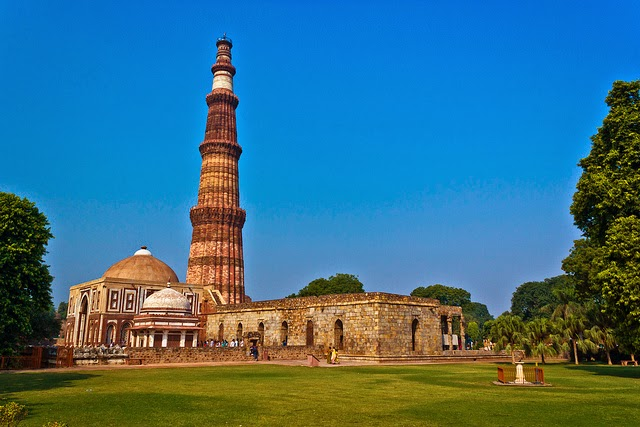
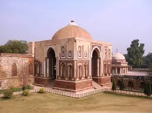
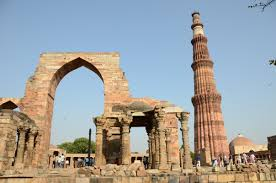
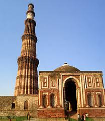
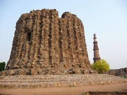
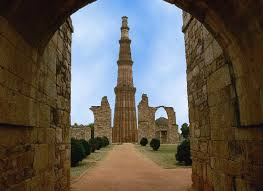
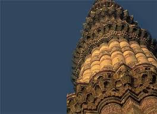
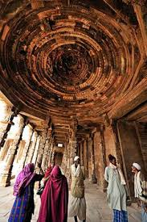
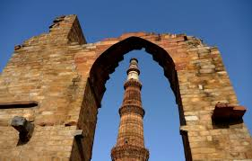
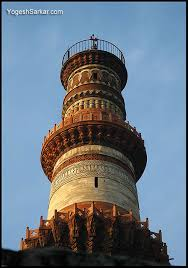

QUTUB MINAR
Regarded as the site of the first Muslim kingdom in northern India, the Qutub Minar is definitely one of the most historical sites in India. It is one of the finest examples of Indo-Muslim architecture with its intricate red sandstone storeys. These are dotted with carvings and verses from the Quran and are mostly in Arabic and Nagari.
Qutub Minar is one of the famous historical places in India and is said to have got its name from Qutb-ud-din Aibak who was the first Muslim ruler of North India. The first mosque in India Quwwat-ul-Islam Masjid is also located at the foot of the Qutub Minar.
The Qutub Minar is a minaret that forms a part of the Qutab complex, a UNESCO World Heritage Site in the Mehrauli area of Delhi, India. Qutub Minar is a 73-metre (239.5 feet) tall tapering tower of five storeys, with a 14.3 metres (47 feet) base diameter, reducing to 2.7 metres (9 feet) at the peak. It contains a spiral staircase of 379 steps. Its design is thought to have been based on the Minaret of Jam, in western Afghanistan.
Qutab Ud-Din-Aibak, founder of the Delhi Sultanate, started construction of the Qutub Minar's first storey around 1192. In 1220, Aibak's successor and son-in-law Iltutmish completed a further three storeys. In 1369, a lightning strike destroyed the top storey. Firoz Shah Tughlaq replaced the damaged storey, and added one more.Sher Shah suri also added an entrance to this tower while he was ruling and Humayun was in exile.
The Minar is surrounded by several historically significant monuments of the Qutab complex, including Quwwat-ul-Islam Mosque, which was built at the same time as the Minar, and the much older Iron Pillar of Delhi. The nearby pillared Cupola known as "Smith's Folly" is a remnant of the tower's 19th century restoration, which included an ill-advised attempt to add a sixth storey.
History
Kuttull Minor, Delhi. The Qutab Minar, 1805
Qutab Minar was established along with Quwwat-ul-Islam Mosque around 1192 by Qutab-ud-din Aibak, first ruler of the Delhi Sultanate. The mosque complex is one of the earliest that survives in the Indian subcontinent. The minaret is named after Qutab-ud-din Aibak, or Qutabuddin Bakhtiar Kaki, a Sufi saint. Its ground storey was built over the ruins of the Lal Kot, the citadel of Dhillika. Aibak's successor Iltutmish added three more storeys. The minar's topmost storey was damaged by lightning in 1369 and was rebuilt by Firoz Shah Tughlaq, who added another storey. In 1505, an earthquake damaged Qutub Minar; it was repaired by Sikander Lodi. On 1 September 1803, a major earthquake caused serious damage. Major Robert Smith of the British Indian Army renovated the tower in 1828 and installed a pillared cupola over the fifth story, thus creating a sixth. The cupola was taken down in 1848, under instructions from The Viscount Hardinge, then Governor General of India. It was reinstalled at ground level to the east of Qutab Minar, where it remains. It is known as "Smith's Folly".
Architecture
The tower's style is basically Iranian, though likely patterned on Afghanistan's Minaret of Jam, and adapted to local artistic conventions by the incorporation of "looped bells and garlands and lotus borders into the carving". Aybak also started Qutub Minar along the patterns of Iranian minarets but built by Hindus artisans. Numerous inscriptions in Parso-Arabic and Nagari characters in different sections of the Qutab Minar reveal the history of its construction, and the later restorations and repairs by Firoz Shah Tughluq (1351–89) and Sikandar Lodi[14] (1489–1517).
The tower has five superposed, tapering storeys. The lowest three comprise fluted cylindrical shafts or columns of pale red sandstone, separated by flanges and by storeyed balconies, carried on Muqarnas corbels. The fourth column is of marble, and is relatively plain. The fifth is of marble and sandstone. The flanges are a darker red sandstone throughout, and are engraved with Quranic texts and decorative elements. The whole tower contains a spiral staircase of 379 steps. At the foot of the tower is the Quwwat ul Islam Mosque. The minar tilts just over 65 cm from the vertical, which is considered to be within safe limits, although experts have stated that monitoring is needed in case rainwater seepage further weakens the foundation.
Interesting fact: The Qutub Minar complex has an iron pillar that has not rusted even after 2000 years.
Entry fee: Indians- INR 10
Foreigners- INR 250
Open from: 7am- 5pm
Must see: The Decorative Light Show held every evening from 6:30 to 8pm and the Qutub Minar Festival that is held in October/November.









Developed By: Vineet Choudhary